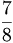

De: La Frikipedia, la enciclopedia extremadamente seria.
De: La Frikipedia, la enciclopedia extremadamente seria. De: La Frikipedia, la enciclopedia extremadamente seria.
Para otros usos de este término/definición/cosa, véase Chino (etnia).
| De la serie idiomas del mundo: | |||
| Chino (idioma) | |||
| |||
| Familia | Chino | ||
| Número de hablantes | 7/8, es decir, 3627 millones de hablantes, solo en china... ya veremos en el resto del mundo | ||
| Hablado en | China y en las tiendas chinas. Pronto dominaran el mundo. | ||
| Hablado por | Chinos y chinas. | ||
| Artificial o Natural | Natural | ||
| Nivel de frikismo | Muy alto, tanto que ni se entiende. | ||
| Dificultad | No creo que sea facil, digo yo. | ||
| Truqui para dominarlo | Muy facil: aprende a hacer lineas horizontales, y habla rapido. | ||
| Máximo exponente | el chino cudeiro | ||
| Ejemplo de uso | La imagen lo dice todo | ||
Supuesto idioma hablado por  de la población terrestre, localizada toda ella en tiendas donde con un leru eres un rey y en talleres clandestinos.
Normalmente son los chinos los que hablan este idioma, pero también puedes ver perros, cucarachas, cometas o pinchos morunos hablando este dialecto.
Hace mucho, mucho tiempo había un ????, originario de ??? que era malo. Y de lo malo que era quiso maldecir ???, y el salió una palabra tan bonita que se fué a vivir al país entoncementes conocido como ???? y le cambió de nombre, bautizándolo China. Se inventó su propio hablar, hasta que de tanto follar con la almohada tuvo un hijillo al que le inculcó el idioma, así sucesivamente hasta los veintitrescatorcecuarentamil chinos que habitan en la actualidad China. Así como el idioma, también se denomina Chino la acepción gentilicial con que se denominan las personas u elementos que viven en China y que hablan Chino. Dentro de Chino se originarona varias ramificaciones del dialecto:
La mayor perte de la población hispano-españolaes China. Según una reciente encuesta realizada por Tomás Turbado, la población espano-kosovar está contenta con los Chinos, por que venden todo a mitad de precio. La principal influencia China en nuestro mundo es la siguiente anterior:
(texto aleatorio en chino):
意指其为半文半白。瞿秋白主张中国需要再开展一次俗语文学革命运动，用“现代人的普通话来写”。这“现代人的普通话”是共通的，习惯上中国各地共同使用的；是大众的，也就是“俗话”，不是“雅语”；是现代的，多音节的。 这样，我们大概可以分出当时“国语”和“普通话”的差别在于前者是“雅”的，后者是“俗”的，前者是半文半白的，与文言藕断丝连的，后者是大众的，是中国各地正在实际使用的，是大众都说得出，听得懂，写得来的大众口语，是比“国语”更具普遍性和更接近人民口语的白话文。我们都听过侯宝林先生的一段相声里模仿当时话剧里“国语”的口吻对话： 欲坐人力车的乘客对车夫说：“三轮，你好不好拉我去东四牌楼？” 拉车的也这味儿：“哦，东四牌楼，东四牌楼……你为什么要到那里去？” 乘客：“哦，我住家在那里。” 车夫：“哦，你给八毛钱好喽。” 乘客：“八毛钱，未免太多了一点。我只能给你三毛钱。” 车夫：“哦，三毛钱！先生，我实在不能答应你的要求。”…… 你看，这是蹬三轮儿的口气吗？由此证明，由于时代的局限，当时所说的国语并不完全是人民大众的口语，确实是一种非驴非马的“近文之雅语”。 尽管如此，国语运动对于文言和方言来说绝对是社会的进步，由于话剧、电影和广播的发展，以北京语音为标准音的国语得到广泛的传播。人们记住了金山、赵丹、石挥、白杨、舒绣文、上官云珠、周璇、孙道临、刘琼这些著名的影星，同时也跟着学会了这些影星所说的国语。 新中国成立以后，在采用“国语” 还是“普通话”为汉民族共同语的正式称呼的讨论中，“普通话”逐渐占了上风。新中国的语言政策是各民族语言一律平等，把汉民族共同语称为国语，似有大汉族主义之嫌。建国初期，“国语”和“普通话”这两个称呼并存，例如当时的小学语文课名为“国语”，而1950年教育部公布的《小学语文课程暂行标准》则要求“使儿童通过以儿童文学为主要形式的普通话语体文的学习、理解，能独立、顺利地欣赏民族的大众的文学，阅读通俗的报纸、杂志和科学书籍”，“能正确地用普通话和语体文表达思想感情”，“通过普通话和语体文并联系各科的学习，获得初步的自然史地常识，并具有爱国主义思想和国民公德”。这时的称呼，还是“普通话”与“国语”并用的。直到1956年2月国务院发出《关于推广普通话的指示》后，“普通话”这一称呼才正式取代了“国语”。由于历史的原因，台湾省至今仍沿用“国语”的说法，但台湾民众也都知道“国语”就是“普通话”，“普通话”就是“国语”。 “华语”是海外华人对“普通话”的称呼。在海外，华语是同粤语、闽南话、客家话、潮州话、浙江话、海南话等汉语方言相提并论的，因此华语不是指汉语，而是专指汉语的普通话。早年奔赴海外的华人多是为谋生而去的，因此文化水平不高，而且那时也没有推广普通话的要求，即使有些文化，也不会说国语。所以早年移居海外的华人以及一直生活在海外的华人后裔一般不会说国语，只会说家乡的方言。近二十年来，因留学、做生意而定居海外的华人越来越多，他们大多会说普通话，因此华语在海外也越来越流行。中国的改革开放和经济文化的大发展以及政治的高度稳定使得中国的综合国力大大增强，中国在世界上的政治、经济、文化影响空前扩大，学习中国的通用语言不仅仅是一种世界性时髦，更是一种越来越迫切的世界性需要。因此推广和学习华语（普通话），从80年代以来开始在许多国家成为热潮，普通话的国际化方兴未艾。 以新加坡为例。新加坡是一个以华人为主体并包含马来人、印度人等少数民族的多语种国家，英语、华语、马来语、泰米尔语均为官方语言。在新加坡，华人占总人口约76%，其祖籍多在福建、广东、海南，使用着福州话、闽南话、潮州话、海南话、广府话、客家话等12种汉语方言，缺少一种能沟通所有华人的共同语言，这对于华族的交往和团结显然不利。在华族中推广能跨越汉语方言的华语，有利于增进华族内部的交往，增强华族的凝聚力。因此从1979年起，新加坡政府着力在华人中推广以北京语音为标准音的华语，提出推广华语的许多好处：华语能消除方言的障碍，方便华人沟通；华语可用华文（中文，即普通话的书面语）来书写（方言不容易用现成的汉字准确记录），学习和应用起来更加容易（这是与“说方言，写华文”的言文不一致相比而言）；华语的应用范围很广，而华文是探求华人丰富和悠久文化遗产的钥匙；随着科技的进展，华语已经成为一种电脑语言；华语可以帮助学生在学校里学习华文；在学校里所学的华语能在校外学以致用；华语只有四声，学起来容易，而方言却有八九声（如广州话有8个声调，阳江话有10个声调），等等。经过大约10年的努力，推广华语运动取得显著的效果。据统计，会说华语的人由1981年的76%上升到1989年的85%，小学生在家里常用华语的由1980年的25.9%上升到1089年的69.1%，而同期在家里常讲方言的由64.4%大幅度下降到7.2%（其间在家里常讲英语的也由9.3%上升到23.3%）。在公共场所使用华语交流的华人大幅度增加，使用方言的大幅度减少。官方鼓励新生儿登记姓名采用华语发音的汉语拼音。政府部门、新闻媒体和学校在电脑华文信息处理和教学中一般使用中国的简化字软件。尽管缺少1989年以后的调查统计资料，但据新加坡官方和学者介绍，华语在新加坡的地位持续上升，方言的使用范围日益狭窄，以致一些人士呼吁要注意保留方言文化。 在马来西亚、泰国、印度尼西亚等东南亚国家，华语在华人学校里也在加强，例如马来西亚的华语教学跟新加坡一样，采用以北京语音为标准音的普通话，采用中国的《汉语拼音方案》和规范汉字（不使用繁体汉字）。至于欧洲和北美，由于近20年来从祖国大陆和台湾去的新移民数量猛增，这些新移民都是说普通话（国语）的，因此普通话在那里的华人社区里也越来越流行。
| Idiomas |
| -.-. --- -.. .. --. --- -- --- .-. ... . • A gugu tata • AAAAAAAAAAAAAAA • Deutsch • Andalúh • Argentino • Bable • Bengatio • Braile • Castellano antiguo • Castenciano • Català • Chimpancé • 漢語 • Cristiano • Croa Croa • Élfico • Engrish • Sédaseverne • Español • Esperanto • Euskera • Français • Galego-portugués • Gondwanés • Gñapés • HAVDITE • HOYGAN • Hxsøčolkφσ • Mésenller • English • Italiano • TlhIngan • Koruño • 1337 • Guau • Lingua latina • R.I.P. • Me me • Neolingua • Panocho • فارسی • Português • Pokémon • ROT13 • SMS • Sacatunn que pen • Spanglish • Toki pona • Tururu • Valencià • Vigués • Ελληνική γλώσσα • Русский • ←↕↕↓→↓↓↕↑↨↓ • 日本語 |
Autor(es):